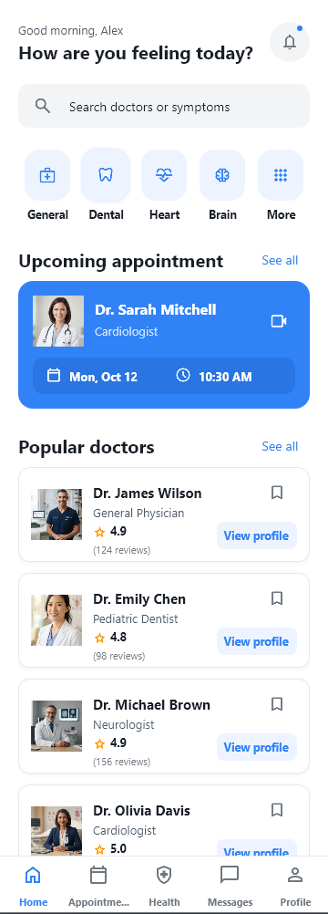

0138m 55s total
Google Stitch
and HTML
Google Stitch MCP, HTML export, then html-to-fmx


Enlarge screenshotMore polished visuals, clear grouping, and more complete assets. The result follows the wireframe and the DESIGN.md color rules.
Third fastest overall